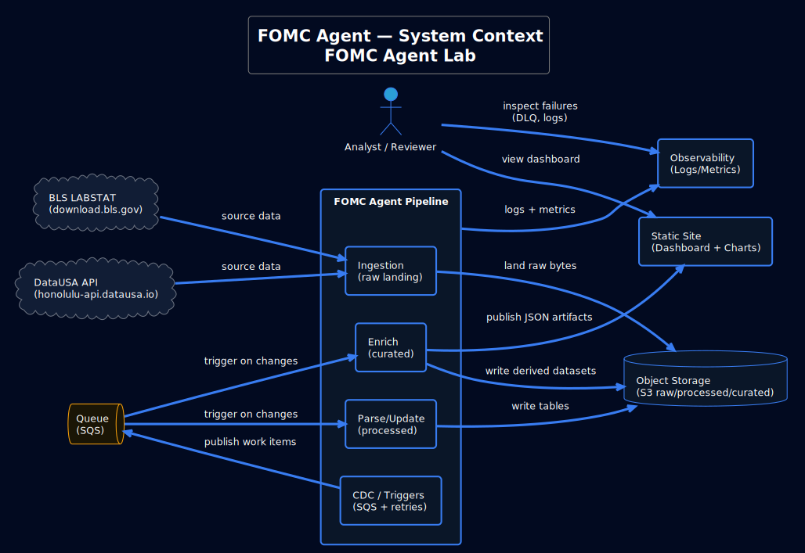
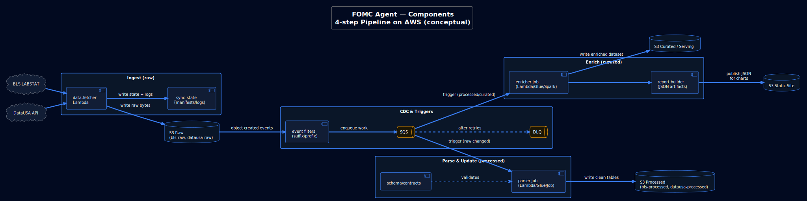
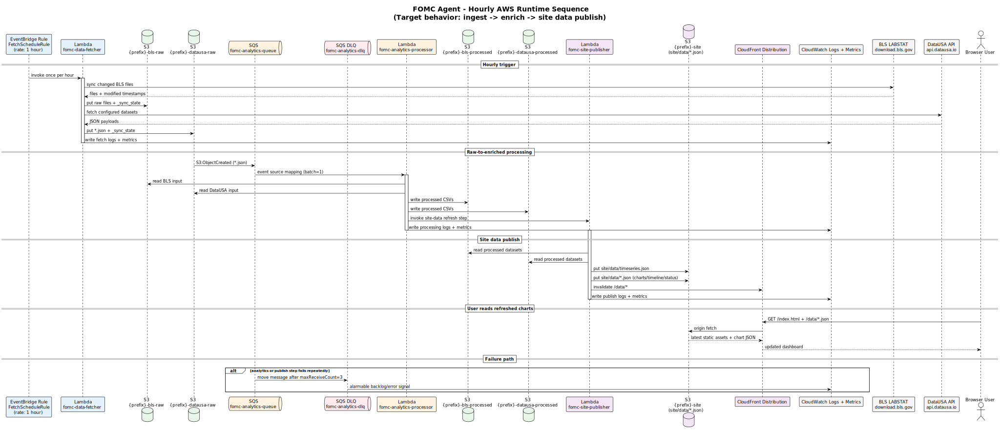
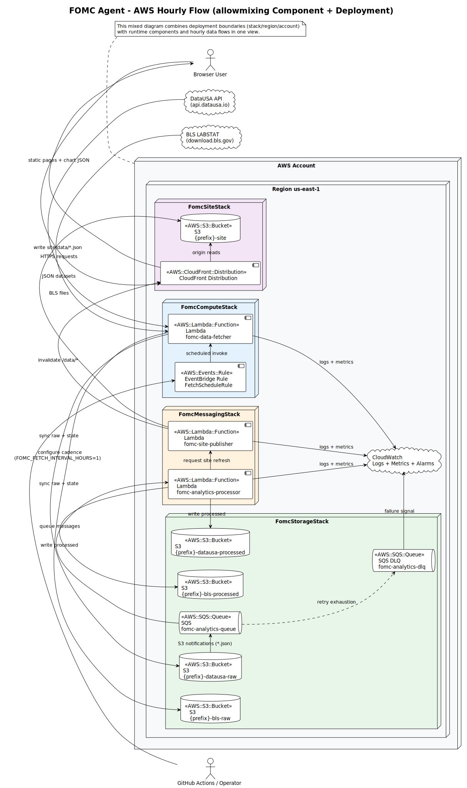
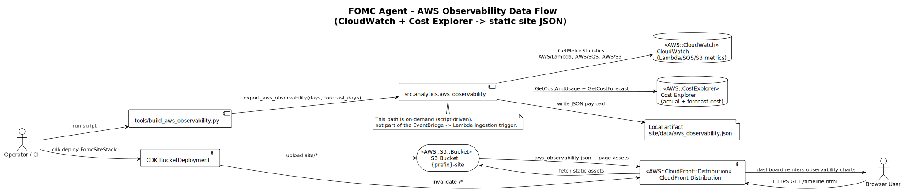
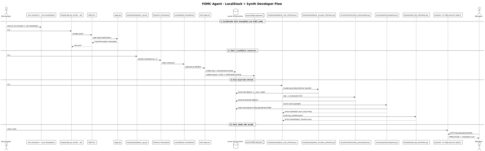
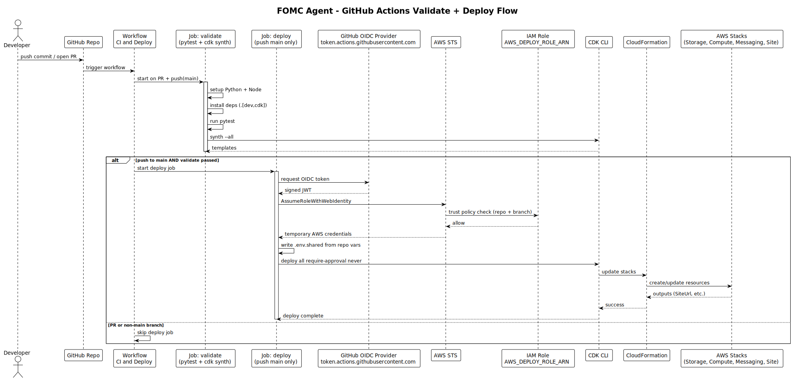
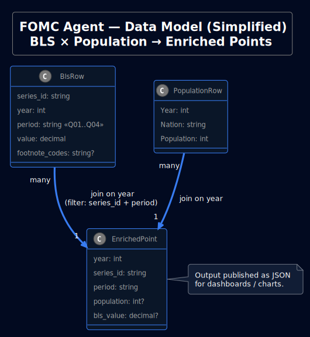
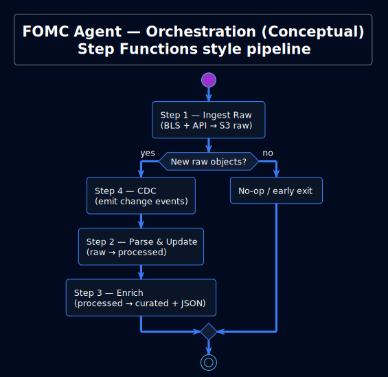
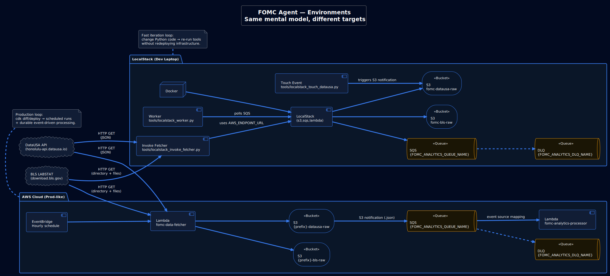

PlantUML Diagrams
Client-ready visuals: architecture, sequence, deployment, failures, and alternatives.
How to regenerate
These SVGs are generated from PlantUML (.puml) sources.
# from repo root:
mkdir -p site/diagrams site/puml
cp docs/*.puml docs/portfolio/*.puml site/puml/
plantuml -tsvg docs/*.puml -o ../site/diagrams
plantuml -tsvg docs/portfolio/*.puml -o ../../site/diagramsTip: open the .puml sources in docs/ to customize labels for your presentation.
Gallery
Click a diagram to open it full-screen (or use “Open SVG” to zoom in a new tab). Click “Show source” to view the PlantUML that generated each diagram.
Deployment Architecture

Show source
Loading…Stack Architecture (CDK)

Show source
Loading…FOMC Agent: System Context
Show source
Loading…FOMC Agent: Components
Show source
Loading…End-to-End Sequence

Show source
Loading…Hourly AWS Runtime Sequence
Show source
Loading…AWS Flow (allowmixing Component + Deployment)
Show source
Loading…AWS Observability Flow
Show source
Loading…LocalStack + Synth Flow
Show source
Loading…GitHub Actions Validate + Deploy
Show source
Loading…FOMC Agent: Data Model
Show source
Loading…FOMC Agent: Reliability (SQS + DLQ)

Show source
Loading…FOMC Agent: Orchestration
Show source
Loading…FOMC Agent: Environments
Show source
Loading…Alternative: Databricks (Lakehouse)

Show source
Loading…Alternative: Google Cloud Platform (GCP)

Show source
Loading…Alternative: Microsoft Azure

Show source
Loading…